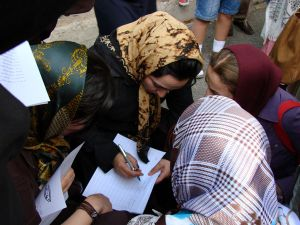
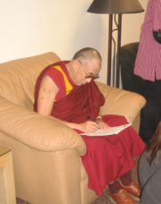

|
|
Support of Nobel Women’s Initiative for women’s campaign
Sunday30 مهر 1385
(September 2006) Iranian women’s rights activists have initiated a landmark campaign to collect one million signatures to demand an end to legal discrimination against women in Iranian law. The Campaign One Million Signatures Demanding Changes to Discriminatory Laws is a follow-up project to the June 12th demonstration for women’s rights in Tehran where several activists were beaten and arrested.
The collection of a million signatures is only the first phase in this widespread campaign for women’s rights in Iran. The Campaign intends to promote cooperation between activists advocating for positive social change by developing connections between a broad base of women’s groups from different backgrounds. The organizers of the project are committed to increasing and improving knowledge through enhanced dialogue, collaboration, and democratic action. The Campaign’s overall objective is to amplify the voices of women whose needs are often not addressed in Iran’s national policy.
For more information about the Campaign please visit: www.we-change.org
To Support the Campaign please click here.
To learn more about how Iranian law promotes discrimination against women click here.


Nobel Laureates His Holiness The Dalai Lama and Adolfo Perez Esquivel sign the Million Signatures Campaign